Aktuálna ponuka
Nehnuteľnosti, ktoré ponúkam
14 nehnuteľností na predaj a prenájom. Vyberte typ, alebo napíšte lokalitu.
14 z 14 ponúk
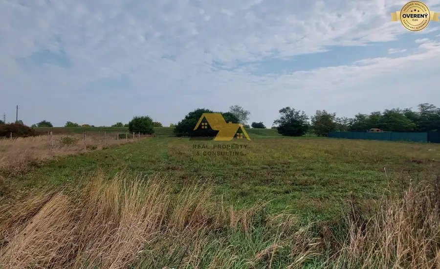
Pozemok3 Cena dohodouPredám stavebný pozemok v obci Andovce, okres Nové Zámky Andovce 750 m² Ponuka: Ponúkame na predaj stavebný pozemok v Andovciach o výmere 750m2. Pozemok má výmeru širka 19 m x dĺžka 39,5 m. Na hranici pozemku sú vedené…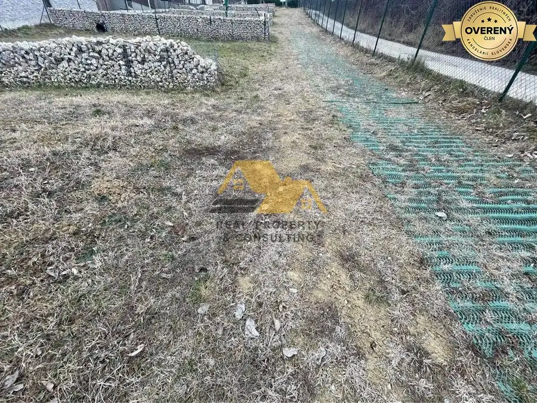
Pozemok6 103 000 €Predám stavebný pozemok v obci Podhájska Podhájska 1068 m² PONUKA: Predám upravený stavebný pozemok v tichej lokalite v obci Podhájska. Pozemok sa nachádza vo vyhľadávanej chatovej oblasti obce a je kompletne…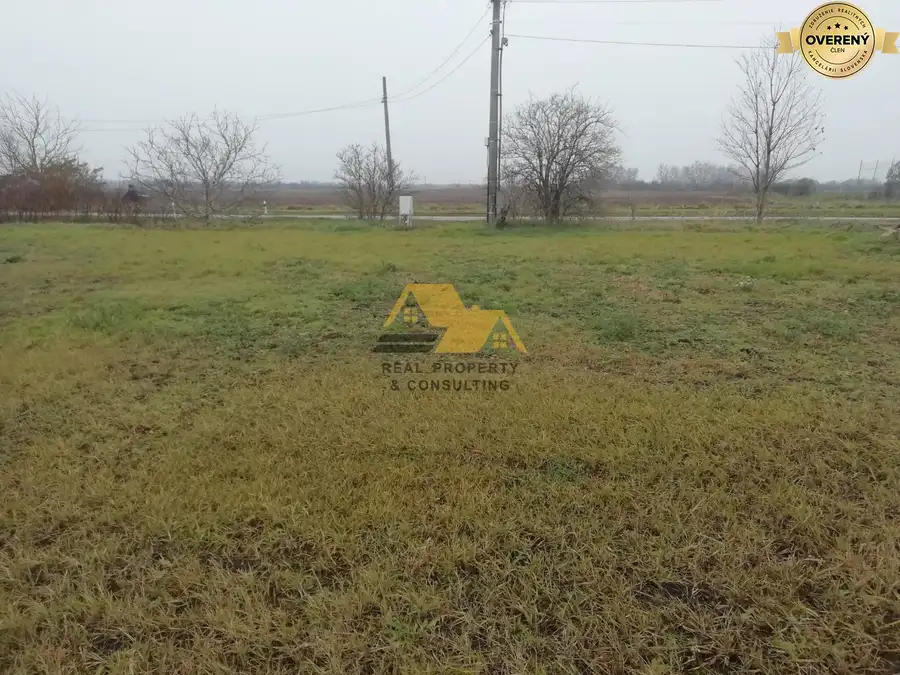
Pozemok2 39 000 €Predám stavebný pozemok v obci Jatov Jatov 566 m² PONUKA: Predám slnečný pozemok v intraviláne obce Jatov. Pozemok je rovinatý, na pozemku je prípojka na elektrinu. Prípojka na obecnú vodu a plyn sa…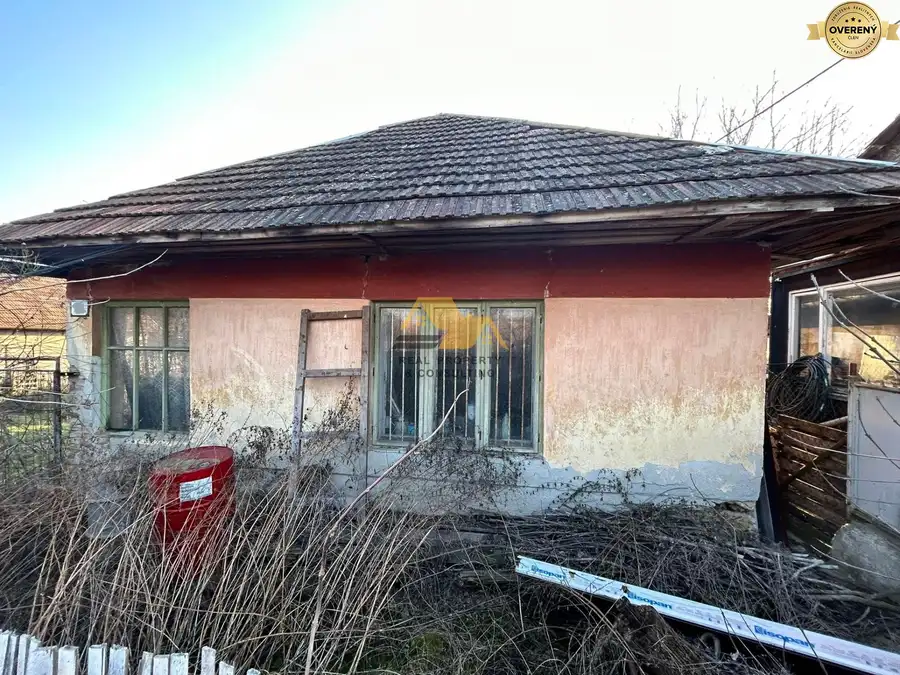
Pozemok10 50 000 €Predám pozemok so starým domom v obci Kolta Kolta 1471 m² PONUKA: Predám pozemok so starým domom v obci Kolta. Dom je postavený z nabíjaniny, je v pôvodnom vstave vhodnom na zbúranie a výstavbu nového…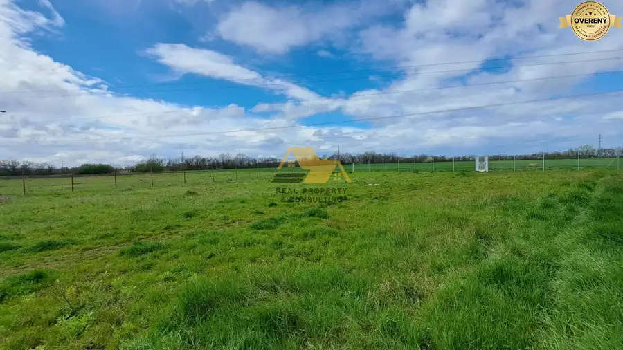
Pozemok 155 000 €Predám stavebný pozemok v Nových Zámkoch Nové Zámky 1178 m² PONUKA: Predám stavebný pozemok vo vyhľadávanej a tichej lokalite v Nových Zámkoch. Pozemok je rovinatý, vhodný na výstavbu 1 alebo 2 rodinných…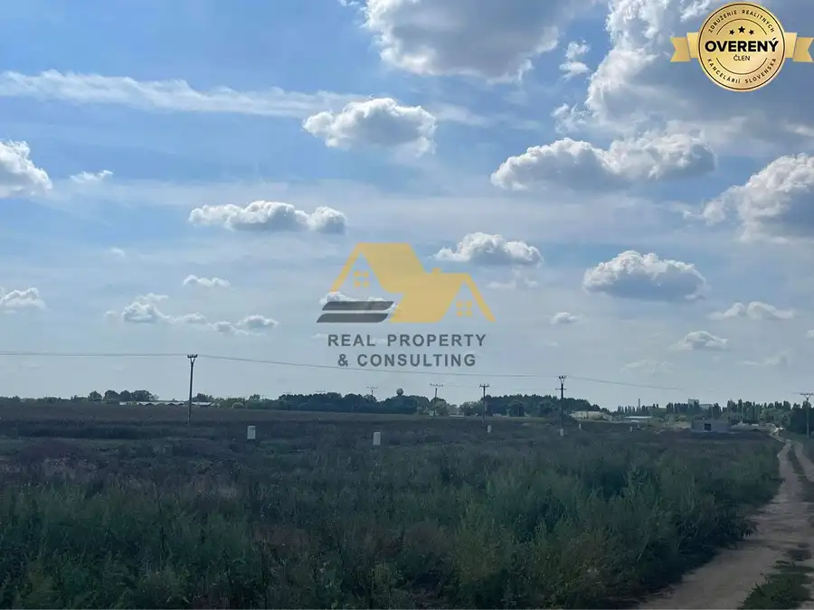
Pozemok3 49 900 €Predám stavebný pozemok v obci Dvory nad Žitavou Dvory nad Žitavou 640 m² PONUKA: Predám stavebný pozemok vo vyhľadávanej časti obce Dvory nad Žitavou. Pozemok je rovinatý, slnečný. Na pozemku sa nachádzajú prípojky na… Pozemok 21 500 €Predám stavebný pozemok vo Dvoroch nad Žitavou Dvory nad Žitavou 387 m² Realitná kancelária Real Property & Consulting s.r.o. ponúka na predaj stavebný pozemok vo Dvoroch nad Žitavou. Pozemok je rovinatý, slnečný, vhodný…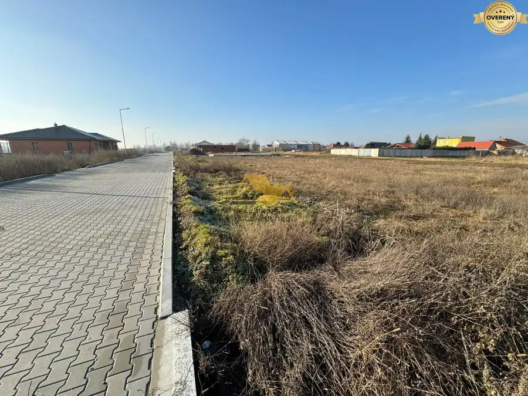
Pozemok4 49 900 €Predám stavebný pozemok vo Dvoroch nad Žitavou Dvory nad Žitavou 638 m² Realitná kancelária Real Property & Consulting s.r.o. ponúka na predaj stavebný pozemok vo vyhľadávanej časti obce Dvory nad Žitavou. Pozemok je…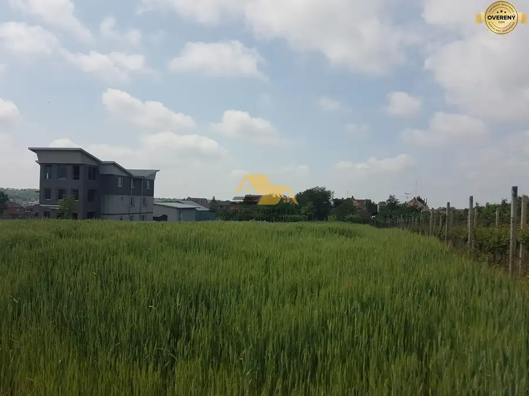
Pozemok 31 500 €Predám pozemok v obci Veľké Lovce Veľké Lovce 1477 m² Realitná kancelária Real Property & Consulting s.r.o. ponúka na predaj pozemok v obci Veľké Lovce. Pozemok je slnečný, má výmeru 1477m2. Prípojky na…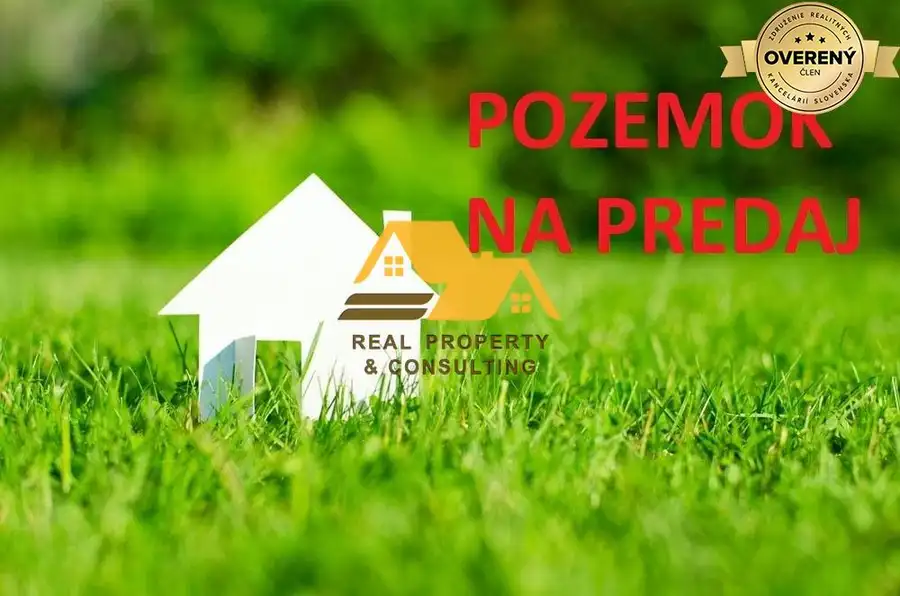
Pozemok 73 000 €Predám pozemok v obci Podhájska Podhájska 1600 m² Realitná kancelária Real Property & Consulting s.r.o. ponúka na predaj slnečný pozemok v obci Podhájska. Výmyera pozemku 1600m2. Prípojky na…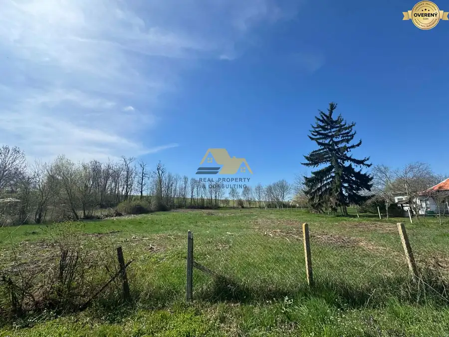
Pozemok2 72 050 €Predám stavebný pozemok v obci Bardoňovo Bardoňovo 1441 m² Realitná kancelária Real Property & Consulting s.r.o. ponúka na predaj pozemok v obci Bardoňovo, neďaleko obce Podhájska so známym termálnym…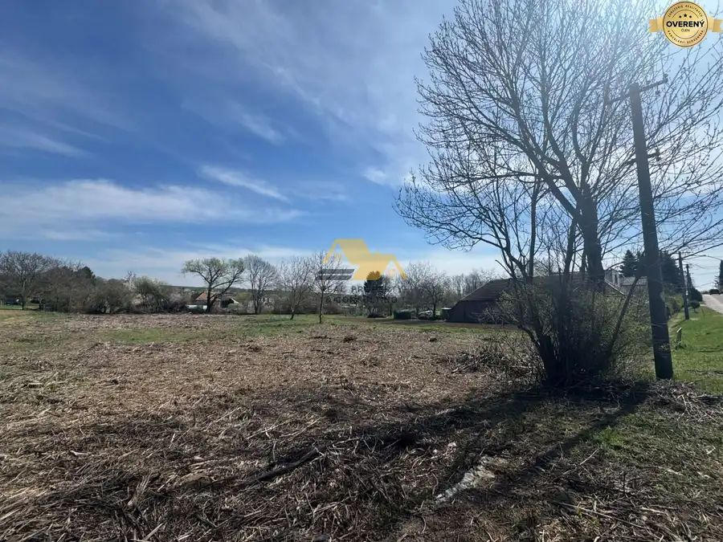
Pozemok4 134 700 €Predám veľký pozemok v obci Bardoňovo Bardoňovo 2694 m² Realitná kancelária Real Property & Consulting s.r.o. ponúka na predaj veľký pozemok v obci Bardoňovo, neďaleko obce Podhájska so známym termálnym…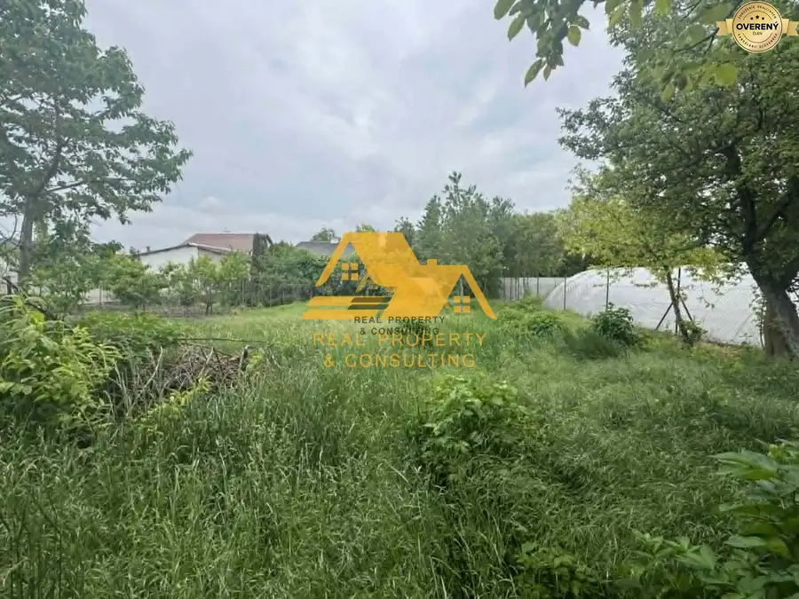
Pozemok4 103 000 €Exkluzívne! Predám rovinatý stavebný pozemok v centre obce Andovce Andovce 945 m² PONUKA: Exkluzívne Predám stavebný pozemok v centre Andoviec, okres Nové Zámky. Pozemok je slnečný, rovinatý a vedie k nemu asfaltová cesta. Prípojky…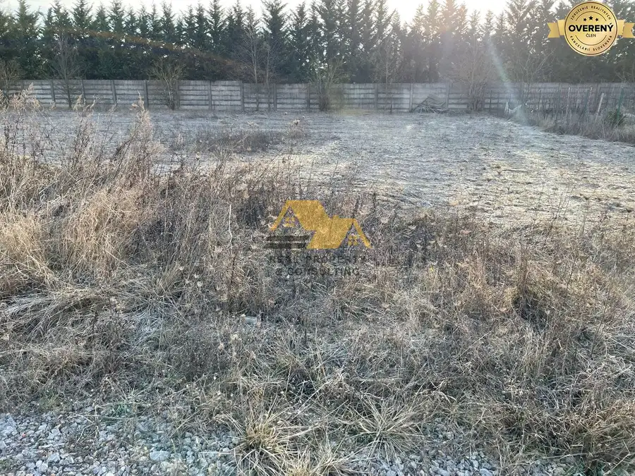
Pozemok5 89 900 €Exkluzívne!Predám stavebný pozemok v Nových Zámkoch Nové Zámky 664 m² PONUKA: Exkluzívne predám stavebný pozemok v tichej lokalite v Nových Zámkoch. Prípojka na elektrinu sa nachádza pred pozemkom. Možnosť napojenia sa…Tomuto výberu zatiaľ nezodpovedá žiadna ponuka. Napíšte mi, čo hľadáte.